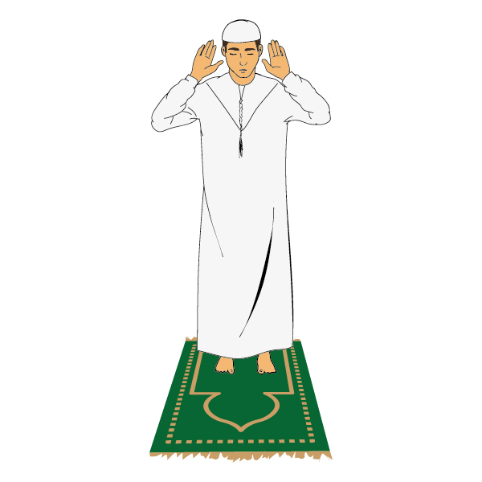
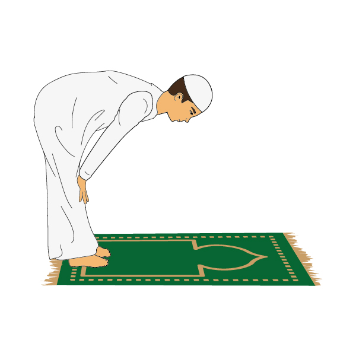
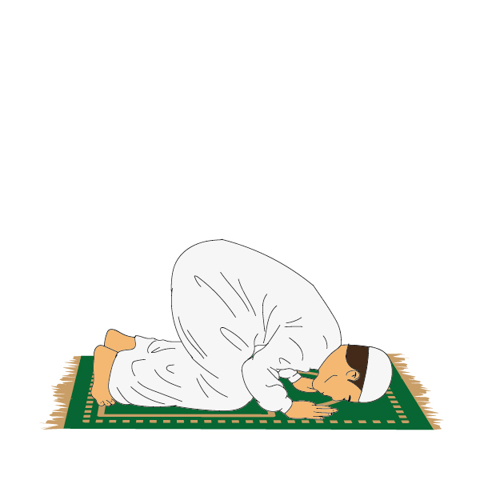
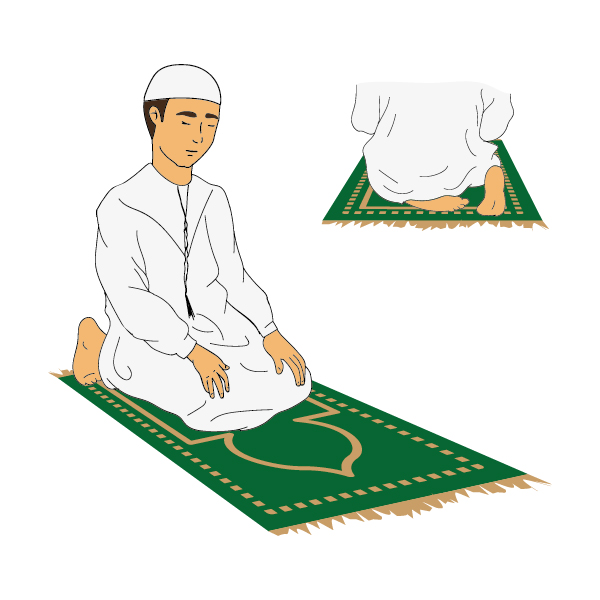
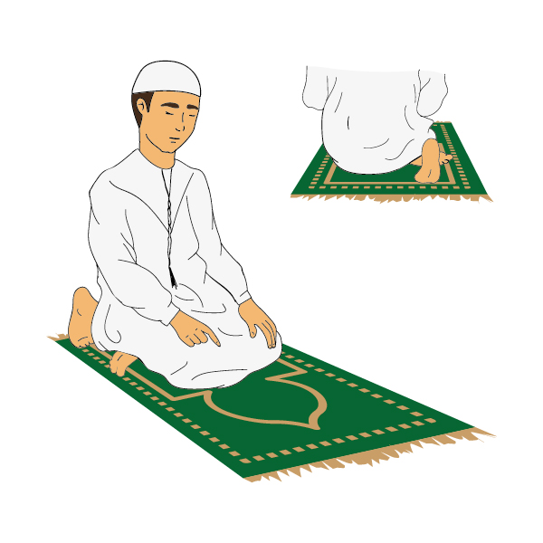
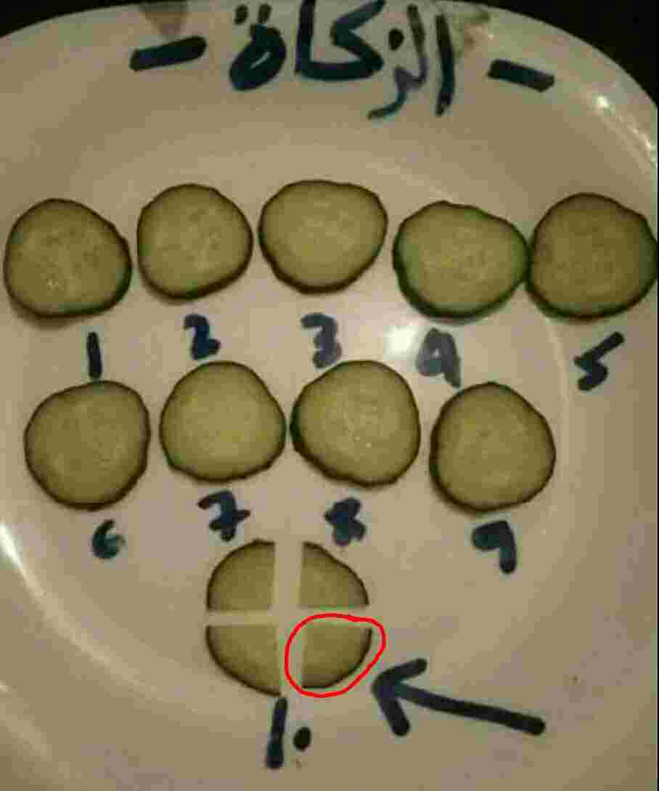
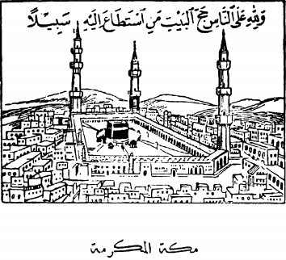
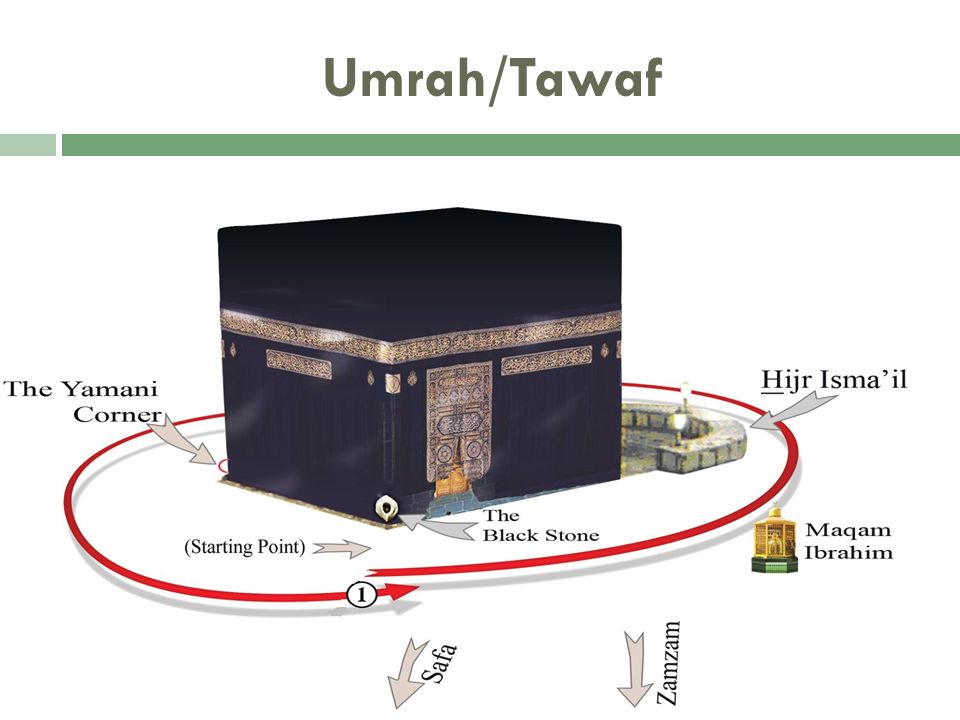
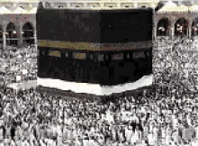

|
|
|---|---|
|
Tambaya - Menene Musulunci? |
الْجوَاب - الإِسْلَامُ هُوَ الْقَوَاعِدُ الشَّرْعِيَّةٌ الَّتِى جَاءَنَا بِهَا نَبِيُّنَا مُحَمَّدُ صَلَّى اللَّهُ عَلَيْهِ وَسَلَّمَ مِنْ عِنْدِ اللَّهِ |
Amsa - Muslunci shine qa'idodin shari'a wacce Annabinmu muhammadu tsira da amincin Allah sutabbata agareshi yazomuna da ita daga wurin Allah |
_________________________ |
ma'ana musulunci shine qa'idodin shari'a wa'yanda Annabinmu tsira da amincin Allah sutabbata agareshi yazomuna dasu daga wurin Allah maɗaukakin sarki.
س - مَاهِيَ قَوَاعِدُ الإِسْلَامِ؟ |
T - Menene ginshiqan Musulunci? |
قَوَاعِدُ الإِسْلَامُ خَمْسٌ: شَهَادَةُ أَن لَاإِلَهَ إِلَّا اللَّهُ وَأَنَّ مُحَمَّداً رَسُولُ اللَّهِ وَإِقَامِ الصَّلَاةِ وَإِيتَاءِ الزَّكَاةِ وَصَوْمُ رَمَضَانَ. |
Ginshiqan musulunci biyar ne: Shaidawa cewa babu abin bautawa (da gaskiya) sai Allah da kuma cewa Muhammadu Manzon Allah ne da tsayarda Sallah da bayarda Zakka da Azumin Ramadana. |
وَحَجُّ الْبَيْتِ لِمَنِ اسْتَطَاعَ إِلَيْهِ سَبِيلاً |
da Hajjin ɗaki ga wanda yasamu ikon hanyan zuwa gareshi |
________________________ | Shafi Na 4 |
|---|
Ma'anar السُّؤَال= س
Ma'anar T = Tambaya
Ma'anar الْجوَاب = ج
Ma'anar A = Amsa
س - مَا مَعْنَى أَشْهَدُ أَن لَا إِلَهَ إلَّا اللَّهُ؟ |
T - Menene Ma'anar na shaida cewa babu abin bautawa da gaskiya sai Allah? |
ج - مَعَنَهَا أَعْتَقِدُ أَنَّ اللَّهَ وَاحِدٌ لَاشَرِيكَ لَهُ وَلَايُعْبَدُ بِحَقٍّ غَيْرُهُ |
A - Ma'anarta ina qudurcewa Lalai Allah shi kaɗaine bayada abokin tarayya babu bauta da haqqin waninsa |
___________________________ |
|
س - مَا مَعْنَى أَشْهَدُ أَنَّ مُحَمَّداً رَسُولُ اللّٰهِ؟ | T - Menene Ma'anar na shaida lallai Annabi Muhammadu Manzon Allah ne? |
ج - مَعَنَهَا أَتَحَقَّقُ أَنَّ نَبِيَّنَا مُحَمَّداً رَسُولٌ (مَبْعُوثٌ) مِنْ عِنْدِ اللَّهِ لِجَمِيعِ الْخَلْقِ بِدِينِ اللإِسْلَامِ |
A - Ma'anarta Na tabbata lallai annabiinmu Muhammadu Manzo ne (abin aikowa) daga wurin Allah ga dukkan halitta da addinin muslunci |
________________________ |
س - مَا مَعْنَى إِقَامُ الصَّلَاةِ؟ |
T - Menene Ma'anar tsayarda sallah? |
ج - مَعْنَاهَا أَدَاءُ الصَّلَوَاتُ الخَمْسِ عَلَی الصُّورَةِ الْوَارِدَةِ فِى الدِّينِ الإِسْلَامِى بِشُرُوطِهَا وَأَوْقَاتِهَا مُعَيَّنَةِ. |
A - Ma'anarta baada salloli biyar akan surad datazo acikin addini musulunci da sharuxɗanta da lokuttanta abin ayyanawa. |
________________________ | Shafi Na 5 |
س - مَا مَعْنَى إِيتَاءُ الزَّكَاةِ؟ |
T - Menene ma'anar bayarda zakka? |
ج - مَعْنَاهَا إِخْرَاجُ جُزْءٍ مِنَ الْمَالِ لِلْفُقَرَاءِ وَالْمَسَاكِينَ بِشُرُوطٍ مَخْصُوصَةٍ. |
A - Ma'anarta fitarda wani yanki daga dukiya ga talakawa da miskinai da sharuxɗa abin keɓancewa. |
________________________ |
س - مَا مَعْنَى صَوْمُ رَمَضَانَ؟ |
T - Menene ma'anar Azumin Ramadana? |
ج - مَعْنَاهُ الْإِمْتِنَاعُ عَنِ الْأَكْلِ وَشُرْبِ وَكُلِّ مُفْطِرٍ مِنْ طُلُوعِ الْفَجْرِ إِلَیٰ غُرُوبِ الشَّمْسِ فِي جَمِيعِ أَيَّامِ شَهْرِ رَمَضَانَ. |
ج - Ma'anarsa hanuwa daga barin ci da sha da dukkan abinda yake karya azumi daga ɗullowar Alfijir zuwa faɗuwar rana cikin dukkanin kwanakin watan ramadana. |
________________________ | Shafi Na 6 |
|
|
|
|
س - مَا هُوَ الْإِيمَانُ؟ |
T - Menene Imani? |
ج - الْإِيمَانُ هُوَ التَّصْدِيقُ بِمَا جَاءَنَا بِهِ نَبِيَُنَا مُحَمَّد صَلَّى اللَّهُ عَلَيْهِ وَسَلَّمَ |
A - Imani shine gaskatawa da abinda Annabinmu Muhammadu yazomuna dashi tsiran Allah da amincinsa su tabbata agareshi |
________________________ |
س - مَا هِيَ قَوَاعِدُ الْإِيمَانِ ؟ |
T - Menene qa'idodin imani? |
ج - قَوَاعِدُ الْإِيمَانِ سِتَّةٌ وَهِيَ الْإِيمَانُ بِااللَّهِ. وَمَلَائِكَتهِ. وَكُتُبِهِ. وَرُسُلِهِ وَالْيَوْمُ الْأَخِرِ وَالْقَدَرِ |
A - qa'idodin imani shidda ne itace Imani da Allah. da mala'ikunsa. da littafansa. da manzanninsa da ranar lahira da qaddara |
________________________ | Shafi Na 7 |
س - مَا مَعْنَى الْإِيمَانُ بِاللَّهِ تَعَالَى إِجْمَالًا؟ |
T - Menene ma'anar Imani da Allah Maɗaukaki a jumlace ? |
ج - مَعْنَاهُ أَنْ تَعْتَقِدَ أَنَّ اللَّهَ مَوْصُوفُ بِكُلِّ كَمَالٍ وَبَعِيدٌ عَنِْ كَلِّ نَقْصٍ. |
A - Ma'anarsa ka tabbatar lallai Allah abin siffantawane da dukkan kamaala manisanci daga dukkan tawaya. |
|---|
|
س - مَا مَعْنَى الْإِيمَانُ بِاللَّهِ تَفْصِيلًا؟ |
T - menene ma'anar imani da Allah a rarrabe? | ج - مَعْنَاهُ أَنَّ اللَّهَ مَوْصُوفُ بِالْوُجُودِ. وَالقِدَمُ - وَالْبَقَاءُ - وَالْمُخَالَفَةِ لِلْحَوَادِثِ - وَالْقِيَامِ[1] بِنَفْسِهِ - وَالْوَحْدَانِيَّةِ - وَالْقُدرَِةِ - وَالإِرَادَةِ - وَالْعِلْمِ - وَالْحَيَاةِ |
A - ma'anarsa lallai Allah abin siffantawane da samuwa. da rashin farko - da dawanzuwa - da saɓawa ga fararru - da tsayuwa[1] da zatinsa - da kaɗaitaka (ta sarauta) - da iko - da nufi - da sani - da rayuwa |
وَالسَّمْعُ - وَالْبَصَرُ - وَالْكَلَامُ - وَأَنَّهُ قَادِرٌ مُرِِيدٌ - عَالِمٌ - حَيٌّ - سَمِيعٌ - بَصِيرٌ - مُتَكَلِّمٌ. |
da ji - da gani - da zance - kuma lallai shi mai iko ne mai nufi ne - masani ne - rayayye ne - mai ji ne - mai gani ne - mai zance ne. |
________________________ | Shafi Na 8 |
|---|
1 Tsayuwa anan ba tsayuba ce irin wadda ake tsaya wa ba tsayuwa da tafiyarda al'amura da jujjuya al'amuran ba yi da makamancin hakan Allah ne masani.
|
س - مَا هِيَ الصِّفَاتُ الْجَائِزَةُ فِي حَقِّ اللَّهِ؟ |
T - menene siffa halal acikin haqqin Allah |
ج - هِيَ إِيجَادُهُ لِكُلِّ مُمْكِن (أَيْ مَوْجُودٍ) وَتَرْكُهُ فِي الْعَدَمِ. |
A - itace samardashi ga dukkan halitta (ai samammu) da barinsa acikin rashi. |
________________________ |
س - مَنْ هُمُ الْمَلَائِكَةُ؟ |
T - su wanene Mala'iku ? |
ج - الْمَلَائِكَةُ أَجْسَاماً مَخْلُوقَةٌ مِنَ نُورٍِ لَا يَأْكُلُونَ وَلَا يَشْرَبُونَ ولَا يَنَامُونَ وَهُمْ عِبَادٌ مُكَرَّمُونَ لَا يَعصُونَ اللَّهَ مَا أَمَرَهُمْ. |
A - Mala'iku jikunkuna ne abin halitta daga haske ba sa ci kuma ba sa sha kuma ba sa barci kuma su bayi ne masu girma basa sa ɓa ma Allah abinda ya umarce su. |
________________________ | Shafi Na 9 |
|
|
|---|---|
| |
|
س - مَنْ هُمُ الرُّسُلُ ؟ |
T - Su Wanane Manzanni? |
ج - الرُّسُلُ عَلَيْهِمُ الصَّلَاةُ وَالسَّلَامُ أُنَاسٌ أَرْسَلَهُمُ اللَّهُ إِلَیٰ النَّاسِ لِيُرْشِدُوهُمْ لِطُرُقِ الْخَيْرِ وَيَنْهُوهُمْ عَنْ طُرُقٍ الشَّرِ أَوَّلُهُمْ ءَادَمُ |
A - Manzanni tsira da aminci yatabbata agaresu mutanne ne Allah ya aikosu zuwa ga mutane domin su shiryardasu ga hanyoyin alkhairi su kuma hane su daga hanyoyin sharri farkonsu Adamu |
وَءَاخِرُهُمْ نَبِيَّنَا مُحَمَّدٌ عَلَيْهِمُ الصَّلَاةُ وَالسَّلَامُ |
kuma qarshensu Annabinmu Muhammadu tsira da aminci sutabbata agaresu |
________________________ | س - مَا هُوَ الْوَاجِبُ فِي حَقَِ الرُّسُلِ عَلَيْهِمُ الصَّلَاةَ وَالسَّلَامُ ؟ |
T - Menene wajibi acikin haqqin manzanni tsira da aminci sutabbata agaresu? |
ج - الْوَاجِبُ فِي حَقَِ الرُّسُلِ عَلَيْهِمُ الصَّلَاةُ وَالسَّلَامُ أَرْبَعُ صِفَاتٍ وَهْيَ : الصِّدْقُ.الْأَمَانَةُ. التَّبْلِيغُ الْفَطَانَةُ ولَا يُوصَفُونَ بِإِضْدَادِهَا |
A - wajibi acikin haqqin manzanni tsira da aminci sutabbata agaresu siffa huɗu ne sune : gaskiya.amana. isad da manzanci lura ba a siffantasu da kishiyoyinsu |
وَهْيَ : الْكَذِبُ. الْخِيِانَةُ. الكِتْمَانُ الْغَفْلَةُ. |
sune : qarya. ha'inci. ɓoye aike gafala. |
________________________ | Shafi Na 10 |
س - مَا هِيَ الْكُتُبُ السَّمَاوِيََةُ؟ |
wasu littafai ne na sama? |
ج - الْكُتُبُ السَّمَاوِيََةُ كُتُبٌ أَنْزَلَهَا اللَّهُ عَلَى رَسُولِهِ وَحْياً بَيَّنَ فِيهَا شَرَائِعَ وَالْأَحْكَامِ لِتَعْلِيمِ النَّاسِ وَإِرْشَادِ إِلَیٰ مَا فِيهِ سَعَدَتُهُمْ |
Littafai nasama littafai ne wa 'yanda Allah yasaukardasu akan Manzonsa tahanyar wahayi ya bayyana shari'o'insa acikinsu da hukunce-hukunce domin koyarda mutane da shiryawwa zuwaga abinda acikinsa arzikinsu (yake) |
وَأَشْهَرَهَا التَّوْرَاة والإِنْجِيلُ وَالزَّبُورُ وَالْقُرْءَانُ وَهُوَ أَعْظَمُهَا وَفَاسِخٌ لِجَمِيعِهَا |
Mafi shahararsu (shine) attaura da injila da zabura da Al-Qur'ani kuma shine mafi girmansu me shafewa ga dukkaninsu |
________________________ | Shafi Na 11 |
س - مَا مَا هُوَ الْيَوْمُ الْآخِرُ؟ |
T - Menene Ranar qarshe ? |
ج - نَعْتَقِدُ أَنَّهُ يَأْتِي يَومٌ يقَالُ لَهُ (الْيَوْمُ الْآخَرُ) أَوْ (يَوْمُ الْقِيَامَ) تَفْنَى فِيهِ الدُّنْيَا وَتَنْتَهِى هَذِهِ الْحَيَاةِ وَتَتَبَدَّلُ الْأَرْضُ وَالسَّمَواتُ |
Munqudurce lallai shi wan nan zai zo yini anacewa dashi (Ranar Qarshe) ko (Ranar tsayuwa) duniya zata za ta qare acikinsa wannan rayuwa za ta kai qarshe kuma asauya qasa da sammai |
وَتَزُولُ الْجِبَالُ وَالنُّجُومُ وَالْبِحَارُ وَفِيهِ يَحْيَا النَّاسُ بَعْدَ الْمَوْتِ لِمُجَازَةِ كُلَّ إِنْسَانٍ عَلَى عَمَلِهِ وَإِسْكَانِهِ الْجَنَّةَ أَوْ النَّارَ |
kuma agusarda duwatsu da taurari da koguna kuma acikinsa za'a rayarda mutane bayan mutuwa domin sakawa dukkan mutum akan aikinsa da zaunardashi a Aljanna ko a wuta |
________________________ | Shafi Na 12 |
س - مَا هِيَ الْجَنَّةُ؟ |
T - mecece Aljanna ? |
ج - الْجَنَّةُ هِيَ دَارُ النَّعِيمِ الَّتِى أَعَدَّهَا اللَّهُ لِمَنْ ءَامَنَ بِهِ وَأَطَاعَهُ وَعَمِلَ الصَّالِحَاتِ فِي الدُّنْيَا |
Aljanna itace gidan ni'ima wacce Allah ya tanadeta ga wanda yaba da gaskiya dashi kuma yayi masa biyayya kuma yayi aiki na kwarai acikin duniya |
________________________ |
س - مَا هِيَ النَّارُ؟ |
T - mecece Wuta? |
ج - النَّارُ دَارُ الْعَذَابِ الَّتِى أَعَدَّهَا اللَّهُ لِمَنْ عَصَاهُ |
Wuta gidan azabace wacce Allah yatanadeta gawanda ya saɓamasa |
________________________ |
س - مَا هُوَ الْقَدْرُ؟ |
T - mecece qaddara ? |
ج - هُوَ أَنْ نَعْتَقِدَ أَنَّ كُلَّ مَا وَقَعَ أَوْ يَقَعُ عَلَى إِنْسَانِ مِنَ الْأُمُورِ هُوَ بِإِيرَادَةِ اللَّهِ وَتَقْدِيرِهِ |
shine muqudurce lallai dukkan abinda ya auku ko yake aukuwa akan mutum daga al'amura shi (abin yana aukuwa ne) da nufin Allah da qaddarawarsa |
لِذَلِكَ الشَّيْءِ قَبْلَ وُقُوعِهِ |
saboda haka wani abu (wanda yake aukuwa Allah yana sane dashi) kafin aukuwarsa |
________________________ | Shafi Na 13 |
س - مَنْ هُوَ نَبِيَُنَا مُحَمَّدُ صَلَّى اللَّهَُ عَلَيْهِ وَسَلَّمَ؟ |
T - wanene Annabinmu Muhammadu tsira da amincin Allah sutabbata agareshi? |
ج - نَبِيَُنَا مُحَمَّدُ صَلَّى اللَّهُ عَلَيْهِ وَسَلَّمَ هُوَ أَفْضَلَ الْأَنْبِيَاءِ الْكِرَامِ أَرْسَلَهُ اللَّهُ لِجَمِيعِ الْخَلْقِ بِالشَّرِيعَةِ الإِسْلَامِيَّةِ لِيُبَشِّرَ الْمُؤْمِنِيونَ بِالثَّوَابِ |
A - Annabinmu Muhammadu tsira amincin Allah sutabbata agareshi shine mafificin Annabawa masu karamci Allah ya aikosu gadukkan halittu da shari'o'in muslunci domin yayi bushara ga Muminai da sakamako |
وَدُخُولِ الْجَنَّةِ وَيُنْذِرَ الْكَافِرِينَ بِالْعِقَابِ وَدُخُولِ النَّارِ فَيَجِبُ عَلَيْنَا الْإِيمَانُ بِرِسَالَتِهِ وَاتِّبَاعُ شَرِيعَتِهِ لِنَكُونَ مِنَ الفَائِزِينَ فِي الْحَيَاتَيْنِ |
da shiga Aljanna da gargaɗin kafirai da uquba (azaba) da shiga wuta to yawajaba akanmu muyi imani da aikensa da bin shari'o'insa domin mukasance daga masurabauta acikin rayuwa biyu (duniya da lahira) |
________________________ | Shafi Na 14 |
|
|
|
س - مَنْ هُوَ الْمُكَلَّفُ؟ |
T - Wanene mukallaf? |
ج - الْمُكَلَّفُ هُوَ الْبَالِغُ الْعَاقِلُ الَّذِي بَلَغَتْهُ دَعْوَةُ دِينَ الْإِسْلَامِي
A - almukallaf shine baligi me hankali wanda kiran addinin musulunci ya isa gareshi
Shafi Na 15
س - مَاهِيَ أَقْسَامُ الْحُكْمِ الشَّرْعِيِّ؟
T - Menene Rabe-raben Hukuncin shari'a?
ج - الْحُكْمُ الشَّرْعِيُّ لَهُ خَمْسَةُ أَقْسَامِ : الْفَرْضَ.
السَّنَّةُ. الْمَكْرُوهُ. الْحَرَامُ. الْمُبَاحُ.
A - Hukuncin shari'a yanada kashe-kashe biyar : Farilla,
Sunna, abinqi, haramun, halal.
س -
مَاهُوَ الْفَرْضُ؟
T - Menene Farila?
ج - الْفَرْضَ
الْأَمْرُ الْوَاجِبُ عَلَى الْمُكَلَّفِ فِعْلُهُ كَالَصَّلَاةِ وَالصِّيَامِ فَإِذَا فَعَلُهُ يُثَابُ وَإِنْ تَرَكَهُ يُعَاقَبُ
A - Farilla
Umarni ne kuma wajibi ne akan baligi ya'aikatashi kamar sallah da azumi to idan ya'aikatashi ana mai sakayyya kuma idan yabarshi ana yimai uquba. |
|
س - مَاهُوَ السَّنَّةُ؟ |
T - Mecece Sunnah? | ج - السَّنَةُ الْأَمْرُ الْمُسْتَحَبُّ فَإِذَا فَعَلُهُ الْإِنْسَانُ نَالَ ثَوَابًا وَإِذَا تَرَكَهُ لَا يُعَاقَبُ كَالصَّدَقَةِ |
A - Sunna umarni ne mustahbbi (ma'ana abinda akaso) to idan mutum ya'aikatashi yana samun lada kuma idan yabarshi ba'ayimai uquba kamar sadaqa. |
________________________ | Shafi Na 16 |
س - مَاهُوَ الْمَكْرُوهُ؟ |
T - Menene Makaruhu? |
ج - الْمَكْرُوهُ الْأَمْرُ الْمُسْتَحَبُّ تَرَكَهُ فَمَنْ تَرَكَهُ نَالَ ثَوَابًا وَمَنْ فَعَلُهُ لَا يُعَاقَبُ كَالْأَكْلِ الْبَصَلِ وَالثَّوْمِ نَيًّا |
A - Makaruhu ala'amari ne abinda akaso abarshi to wanda yabarshi yana samun lada kuma wanda ya'aikatashi ba ayimai uquba kamar cin albasa da tafarnuwa ɗanya |
________________________ |
س - مَاهُوَ الْحَرَامُ؟ |
T - Menene Haram? |
ج - الْحَرَامُ الْأَمْرُ الْوَاجِبُ تَرَكَهُ فَمَنْ تَرَكَهُ نَالَ ثَوَابًا وَمَنْ فَعَلُهُ نَالَ عِقَاباً كَشُرْبِ الْخَمْرِ وَالسَّرِقَةِ |
A - Haramun umarni ne kuma wajibi ne barinsa to duk wanda yabarshi yana samun lada kuma wanda ya'aikatashi yana samun uquba karmar shan giya da sata |
________________________ |
س - مَاهُوَ الْمُبَاحُ؟ |
T - Menene Halal? |
ج - الْمُبَاحُ الْأَمْرُ الَّذِي يُبَاحُ لِلْإِنْسَانِ فِعَلُهُ كَالْأَكْلِ وَالشُّرْبِ وَاللَّبْسِ فَلَا ثَوَابَ فِيهِ وَلَا عِقَابَ |
A - Halal al'amari ne wanda ya halatta ga mutum ya'aikatashi kamar ci da sha da tufafi to babu lada acikinsa kuma babu uquba |
________________________ | Shafi Na 17 |
الدَّرسُ الْخَامِسُ |
Darasi
Na biyar |
|
|
س - مَا مَعْنَى اسلطَّهَارَةُ؟ |
T - Menene Ma'anar Tsarki? |
ج - الطَّهَارَةُ مَعْنَاهَا النَّظَافَةُ وَالْمَقْصُودُ بِهَا : الْوُضُوءُ وَالْغُسْلُ وَالتَّيَمُّمُ وَإِزَالَةُ النَّجَاسَةِ عَنْ بَدَنِهِ وَثَوْبِ وَمَكَانِ الْمُصَلِّى |
A - Tsarki ma'anarta tsafta abin nufi da ita : Alwala da wanka da taimama da cire najasa daga jikinsa da tufafi da wurin sallah |
وَتَحْصُلُ الطَّهَارَةُ بِالْمَاءِ الْمُطْلَقُ الَّذِى لَمْ يَتَغَيَّرُ بِشَيْءٍ (طَاهِرٍ) كَاللَّبَنِ وَالزَّيْتِ وَمَاءِ الزَّهَرِ أَوْ (نَجَسٍ) كَالْبَولِ وَالخَمْرِ |
tsarki kuma yana tabbata da ruwa tsantsa wanda baya canzawa da wani abu (mai tsarki) kamar nono da mai da ruwa fure ko (qazanta) kamar bawli da giya |
________________________ | Shafi Na 18 |
س - مَاهِيَ وَسَائِلُ الطَّهَارَةِ؟ |
T - Menene Tsanonin Tsarki? |
ج - وَسَائِلُ الطَّهَارَةِ أَرْبَعٌ : الْمَاءُ. التُّرَابِ. الْحَجَرُ. الدَّبْغُ. أَمَّا (النَّارَ) فَهْيَ فِي غَيْرِ الشَّرْعِ الْمُطَهِّرَاتِ وَإِذَا وَلَغَ الْكَلْبُ |
A - tsanonin tsarki huɗu ne : ruwa. turɓaya. dutse. jima. amma (wuta) to ita babu shar'anci acikin ababen tsarkakewa (nata) kuma idan kare yayi lallage |
فِي إِنَاءٍ فَإِنَّهُ يُرَاقُ وَيُغْسَلُ سَبْعُ مَرََاتٍ وَاحِدَةً مِنْهَا بِتُرَابٍ |
acikin kwarya to lallai shi (wannan kwaryan) ana kwarararwa kuma awanke sau bakwai ɗayar daga gareta da turɓaya (wato qasa) |
________________________ |
|---|
الدَّبْغُ
|
|
س - مَاهُوَ الْمَعْفُوُّ عَنْهُ مِنَ النَّجَاسَاتِ؟ |
Menene akayi rangwame agareshi daga qazantu? | ج - الْمَعْفُوُّ عَنْهُ مِنَ النَّجَاسَاتِ ثَلَاثَةٌ الْمَيِّتَةُ الَّتِي لَا يَسِيلُ دَمُهَا (كَالْخُنْفُسَاءِ) قَلِيلُ الدَّمِ والْقِيحِ وَالطِّينِ وَمَاءِ الشَّارِعِ النَّجِسِ |
A - Abin da akayi rangwame agareshi daga qazantu ukku ne mataccen abu wacce jininta baya gudana (kamar hunfasaa') [1] kaɗan ɗin jini da miki laka da ruwan titi me najasa |
حَيْثُ يَعْسُرُ التَّحَرُّز مِنْهُ |
ta inda kaucewa yakeda wuya daga gareshi |
________________________ | Shafi Na 19 |
|---|
الْخُنْفُسَاء
|
|
|
|
|---|---|
|
س - مَاهِيَ فَرَائِضُ الْوُضُوءِ؟ |
T - Menene farillan Alwala? | ج - فَرَائِضُ الْوُضُوءُ سَبْعَةٌ الدَّلْكُ : الْفَوْرُ. النِّيَّةُ. غَسْلُ الْوَجْهِ. غَسْلُ الْيَدَيْنِ لِلْمِرْفَقَيْنِ. مَسْحُ الرَّأسِ. غَسْلُ الرِّجْلَينِ لِلْكَعْبَيْنِ |
A - Farillan Alwala bakwai ne cuɗanyawa : gaggautawa. niyya. wanke fuska. wanke hannaye biyu ga gwuiwar hannu biyu. shafar kai. wanke qafafuwa biyu ga idan sawu |
________________________ | Shafi Na 20 | <
س - مَاهِيَ سُنَنُ الْوُضُوءِ؟ |
T - Mecece Sunnonin Alwala? |
ج - سُنَنُ الْوُضُوءُ (سَبْعَةٌ): غَسْلُ الْيَدَيْنِ لِلْكُوعَيْنِ قَبْلَ إِدْخَالِهِمَا فِي الْإِنَاءِ (ثَلَاثاً) رَدُّ مَسْحِ الرَّأسِ. مَسْحُ الْأُذُنَيْنِ. الْمَضْمَضَةُ. |
A - Sunnonin Alwala (bakkwai ne): wanke hannaye biyu ga ku'u biyu (wato wuyan hannu biyu) kafin shigardashu acikin kwarya (sau ukku) mayar da shafar kai. shafar kunnuwa biyu. kurkuran baki. |
الْإِسْتِثَارُ تَرْتِيبُ فَرِائِضِهِ. |
fyacewa jeranta farillansa. |
________________________ |
س - مَاهِيَ مُسْتَحَابَّاتُ الْوُضُوءِ؟ |
T - Menene Mustahabban Alwala? |
ج - مُسْتَحَابَّاتُ الْوُضُوءِ: أَحَدَ عَشَرَ مُسْتَحَبًّا وَهْيَ: التَّسْمِيَةُ. الْبُقْعَةُ الطَّاهِرَةُ تَقْلِيلُ الْمَاءِ. تَيَامُنُ الْإِنَاءِ إِنْ كَانَ مُتَّسِعاً. |
A - Mustahabban Alawla: mustahabbai goma sha ɗaya ne itace: ambaton bismillah. wuri mai tsarki qarancin ruwa. da manta kwaryan alwala in yakasance me yalwa. |
الْغَسْلَةُ الثَّانِيَّةُ وَالَثَّالِثَةُ. الْبَدْءُ بِالْمَيَامِنِ. السِّوَاكُ. تَرْتِيبُ السُّنَنِ |
wanki na biyu da ta ukku. farawa da dama. magogi. jeranta sunnoni. |
________________________ | Shafi Na 21 |
غَسْلُ الْوَجْهِ
|
|
|
مَسْحُ الرَّأسِ
|
|
غَسْلُ الرِّجْلَينِ إِلَى الْكَعْبَيْنِ
|
|---|
 غَسْلُ الْيَدَيْنِ إِلَى الْمِرْفِقَيْنِ
غَسْلُ الْيَدَيْنِ إِلَى الْمِرْفِقَيْنِ
مَعَ بَعْضِهَا - تَرْتِيبُ مَعَ الْفَرَِائِضَ بَدْءُ مَسْحِ الرَّأْسِ مِنْ مُقَدَّمِهِ - تَخْلِيلُ أَصَابِعِ الرِِّجْلَينِ |
tareda sashenta - jerantawa tareda farillai fara shafar kai daga magaba cinsa - tsets-tsefe yatsun qafafuwa biyu | ________________________ | Shafi Na 25 |
س - مَاهِيَ نَوَاقِضُ الْوُضُوءِ؟ |
T -menene Masu warware Alwala ? |
ج - نَوَاقِضُ الْوُضُوءِ عَشَرَةٌ وَهْيَ: الْبَوْلُ الرِّيحُ _ السَّلَسُ الْقَلِيلُ _ الْغَائِطُ _ السُّكْرُ _ الْإِغْمَاءُ _ الْجُنُونُ الشَّكُّ فِي الْحَدَثِ _ الرِّدَّةُ |
A - Masu warware alwala goma ne sune: bauli iska (tusa) _ salsal kaɗan kashi (bayan gida) _ maye _ suma _ hauka kokonto acikin hadasi (kari) _ ridda (fita daga muslunci) |
________________________ |
س - مَاهِيَ مَكْرُوهَاتُ الْوُضُوءِ؟ |
T - Menene ababen qi a alwala? |
ج - مَكْرُوهَاتِ الْوُضُوءِ ثَلَاثاً : زِيَادَةٌ عَلََى محَلِّ الْغَسْلِ مَسْحُ الرَّقْبَةِ الْغَسْلَةُ الرَّابِعَةُ |
A - Makaruhai na alwala ukke ne : qari abisa mahallin wankewa, shafar wuya, wankewa huɗu, |
________________________ |
|---|
|
| |
|
س - مَاهُوَ الْغُسْلُ؟ |
T - Menene Wanka? |
ج - الْغُسْلُ عِبَارَةٌ عَنْ غَسْلِ جَمِيعِ الْبَدَنِ بِالْمَاءِ |
A - Wanka abin fassarawa ne daga wanke dukkan jiki da ruwa |
________________________ | Shafi Na 26 |
س - مَاهِيَ فَرَائِضُ الْغُسْلِ؟ |
Mecece farillan wanka? |
ج - فَرَائِضُ الْغُسْلِ أَرْبَعَةٌ : النِّيَّةُ الْفَوْرُ الدَّلْكُ لِجَمِيعِ الْبَدَنِ تَخْلِيلُ جَمِيعِ شَعَرِ الرَِّأْسِ وللَِحْيِةِ |
A - Farillan wanka huɗu ce: niyya gaggautawa cuɗanyawa ga dukkan jiki tsets-tsefe dukkan gashin kai da gemu |
________________________ |
|---|
|
س - مَاهِيَ سُنَنُ الْغُسْلُ؟ |
T -Mecece sunnoni wanka? | ج - سُنَنُ الْغُسْلُ أَرْبَعَةٌ : الْمَضْمَضَةُ غَسْلُ الْيَدَيْنِ لِلْكُوعَيْنِ فِي اِبْتِدَاءِ الْغُسْلِ وَالْإِسْتِنْثَارُ وَمَسْحُ ثُقْبِ الْأُذُنَيْنِ |
A - Sunnonin wanka huɗu ce : kurkuran baki wanke hannaye biyu ga wuyan hannu biyu acikin fara wanka da fyacewa da shafar kafofin kunnuwa biyu |
________________________ | Shafi Na 27 |
س - مَاهِيَ مُسْتَحَابَّاتُ الْغَسْلِ؟ |
T - Mecece mustahabban wanka? |
ج - مُسْتَحَابَّاتُ الْغَسْلِ سَبْعَةٌ : الْبَدْءُ بِغَسْلِ مَا بِجَسَدِهِ مِنَ النَّجَاسَةِ. [1] التَّسْمِيَةُ تَثْلِثُ غَسْلِ الرَّأسِ تَقْدِيمُ أَعْضَاءِ الْوُضُوءِ |
A - Mustahabban wanka bakwai ce : farawa da wanke abindake da jikinsa daga qazanta, ambaton bismillah [1] wanke kai ukku, gabatarda gavɓan alwala, |
التَّقْلِيلُ مِنَ الْمَاءِ الْبَدْءُ بِأَعْلَى الْبَدَنِ الْبَدْءُ بِالْمَيَامِنِ |
qaranci na ruwa, farawa da saman jiki, farawa da da ma, |
|---|
[1] Anan ana nufin ambaton bismillah a zuciya baya halatta a ambaci bismillah acikin banɗaki.
|
س - مَاهُوَ التَّيَمُّمُ؟ |
T - Menene Taimama? | ج - التَّيَمُّمُ هُوَ مَسْحُ الْوَجْهِ وَالْيَدَينِ لِلْمِرْفَقَيْنِ بِتُرَابٍ طَاهِرٍ بَدَلاً عَنِ الْوُضُوءِ أَوْ الْغُسْلِ |
A - Taimama shine shafar fuska da hannaye biyu ga wuyan hannu biyu da qasa mai tsarki musanya daga alwala ko wanka |
________________________ | Shafi Na 28 |
س - مَاهِيَ مُوجِبَاتِ التَّيَمُّمِ؟ |
T - Mecece abindake wajabta taimama? |
ج - مُوجِبَاتِ التَّيَمُّمِ ثَلَاثَةٌ فَقْدُ الماءِ الْخَوْفُ مِنْ وُقُوعِ مَرَضٍ - خَوْفِ خُرُوجِ الْوَفْتِ. |
A - abindake wajabta taimama ukku ne rashin ruwa, tsoro daga aukuwar cuta (rashin lafiya), - tsoron fitar lokaci. |
________________________ |
|---|
|
س - مَاهِيَ فَرَائِضُ التَّيَمُّمِ؟ |
T - Mecece farillan taimama? | ج - فَرَائِضُ التَّيَمُّمِ ثَمَانِيَةٌ : نِيَّةُ اسْتِبَاحَةِ الصَّلَاةِ _ الصَّعِيدُ الطَّاهِرُ _ الضَّرْبَةُ الأُولَى _ مَسْحُ الْوَجْهِ _ مَسْحُ الْيَدَيْنِ لِلْكَعْبَيْنِ _ الْفَوْرُ _ |
A - Farillan taimama takwas ne : niyyar halatta sallah _ wuri mai tsarki _ bugu na farko _ shafar fuska _ shafar hannaye biyu ga wuyan hannaye biyu _ gaggautawa _ |
_ دُخُولُ الْوَقْتِ الصَّلَاةِ _ إِتِّصَالُ الصَّلَاةُ بِهِ. |
_ shigar lokacin sallah _ sadarda sallah dashi. |
________________________ | Shafi Na 29 |
|---|
|
|
| لَا يُصَلِّى بِاتَّيَمَّمِ إِلَّا فَرْضٌ وَاحِدَةٌ وَالسُّنَّة إِنِ اتَّصَلَتْ بِهِ وَكَذَلِكَ النَّوَافِل |
Ba ayin sallah da taimama sai farilla guda da sunnah idan ta sadu dashi hakama nafilfili |
________________________ |
|
س - مَاهِيَ مُسْتَحَابَّاتُ التَّيَمُّمِ؟ |
T - Mecece mustahabban taimama? | ج - مُسْتَحَابَّاتُ التَّيَمُّمِ (ثَلَاثَةٌ) التَّسْمِيَةُ تَقْدِيمُ الْيَدِ الْيُمْنَى عَلَى الْيُسْرَى - تَقْدِيمُ الْأَعْلَى عَلَى الْأَسْفَلِ |
A - Mustahabban taimama (ukku) ne ambaton bismillah gabatarda hannun da ma akan hagu - gabatarda sama akan qasa |
________________________ |
س - مَاهِيَ نَوَاقِضُ التَّيَمُّمِ؟ |
T - Mecece masu warware taimama? |
ج - نَوَاقِضُ التَّيَمُّمِ هِيَ نَوَاقِضُ الْوُضُوءِ وَوُجُودُ الْمَاءِ قَبْلَ الدُّخُولِ فِي الصَّلَاةِ إِذَا كَانَ الْوَقْتُ مُتَّسِعاً |
A - Masu warware taimama sune masu warware alwala dasamuwar ruwa kafin shiga cikin sallah idan lakacin yakasance mai yalawa |
________________________ | Shafi Na 30 |
|---|
|
|
|
س - مَاهِيَ الصَّلَاةُ؟ |
T - Mecece Sallah? |
ج - الصَّلَاةُ فِي اللُّغَةِ الدُّعَاءُ وَعِنْدَ الْفُقَهَاءِ قُرْبْةٌ فِعْلِيَّةٌ ذَاتُ إِحْرَامٍ وَرُكُوعٍ وَسُجُودٍ وَتَكْبِيرٍ وَتَسْلِيمٍ |
A - Sallah a luggah (yare) addu'a kuma agun malaman fiqihu ibada ta aiki ma'abuciya harama da ruku'i da sujjada da kabbara da sallama |
________________________ |
|---|
|
س - مَاهِيَ شُرُوطُ صِحَّةِ الصَّلَاةِ؟ |
T - Mecece shuruxɗan ingancin sallah? | ج - شُرُوطُ صِحَّةِ الصَّلَاةِ خَمْسَةٌ: الطَّاهِرَةُ مِنَ الْحَدَثِ. طَهَارَةُ الْبَدَنِ وَالثَّوْبِ وَالْمَكَانِ مِنَ النَّجَاسَاتِ. |
A - Sharuxɗan ingancin sallah biyar ne: tsarki daga kari. tsarkin jiki da tufafi da wuri na najasa. |
سِتْرُ الْعَوْرَةِ دُخُولُ الْوَقْتِ الصَّلَاةِ. إِسْتِقْبَالُ الْقِبْلَةِ. |
suturce al'aura shigar lokacin sallah. fuskantar alqibla. |
________________________ |
|
س - عَلَى مَنْ تَجِبُ الصَّلَاةُ؟ |
T - Akan Wanene sallah tawajaba? | ج - تَجِبُ الصَّلَاةُ عَلَى كُلَّ مُسْلِمٍ بَالِغٍ عَاقِلٍ وَعَلَى كُلِّ مُسْلِمَةٍ كَذَلِكَ وَلِيِّ الصَّبِيِّ أَنْ يَأْمُرُهُ بِالصَّلَاةِ لِسَبْعِ سِنِينَ |
A - Sallah tanawajaba akan dukkan musulmi balagagge mai hankali kuma akan dukkan musulma hakama (yana wajaba ga) waliyyin yaro ya umurceshi da sallah (idan yaron yakai) ga shekara bakwai. |
________________________ | Shafi Na 31 |
|---|
|
| |
|
س - مَاهِيَ فَرَائِضُ الصَّلَاةِ؟ |
T - Mecece Farillan Sallah? |
ج - فَرَائِضُ الصَّلَاةِ سِتَّةٌ عَشَرَ: نِيَّةُ الصَّلَاةِ الْمُعَيِّنَةِ. تَكْبِيرَةُ الْإِحْرَامِ الْقِيَامُ لَهَا. قِرَاءَةُ الْفَاتِحَةِ الْقِيَامُ لَهَا الرُّكُوعُ الرَّفْعُ مِنْهُ. |
A - Farillan sallah goma sha shidda (ne) : niyyar sallah ta farilla. kabbarar harama tsayuwa dominta. karatun fatiha tsayuwa dominta ruku'u ɗagowa daga gareshi. |
السُّجُودُ الرَّفْعُ مِنْهُ الْإِعْتِدَالُ. الطُّمَأْنِينَةُ فِي الْكُلِّ. السَّلَامُ الْجُلُوسُ لَهُ التَّرْتِيبُ بَيْنَ الْفَرَِائِضِ. |
sujjada ɗagowa daga gareshi dai-daituwa. nutsuwa acikin dukkan. sallama zama gareshi jerantawa tsakankn farillai. |
________________________ | مُتَابَعَة الْمَأْمُومُ لِإِمَامِهِ في الْإِحْرَامِ وَالسَّلَامُ نِيَّةُ الْمَأْمُومِ الْإِقْتِدَاءُ بِإِمَامِهِ فِي جَمِيعِ الصَّلَوَاتِ |
bin mamu ga limaminsa acikin harama da sallama niyyar mamu (ga yin) koyi da limaminsa acikin dukkan salloli |
|---|
|
س - مَاهِيَ سُنَنُ الصَّلَاةِ المُؤَكَّدَةِ؟ |
T - Mecece Sunnonin Sallah masu qarfi? | ج - سُنَنُ الصَّلَاةِ المُؤَكَّدَةِ الَّتِي يَسْجُدُ لِتَرْكِهَا (عَشَرَةٌ) وَهْيَ: قِرَاءَةُ السُّورَة أَوْ ءَايَةٍ بَعْدَ الْفَاتِحَةِ. الْقِيَامُ لَهَا عَلَى الْقَادِرِ. |
A - Sunnonin sallah masu qarfi wacce ake sujjada ga barinsu (goma ne) itace: karatun sura ko aya bayan fatiha. tsayuwa dominta akan iko. |
الْجَهْرُ فِيمَا يُجْهَرُ فِيهِ. السِّرُّ فِيمَا يُسَرُّ فِيهِ. كُلُّ تَكْبِيرَةٍ غَيْرَ تْكْبِيرَةِ الْإِحْرَامِ |
bayyanawa aciki inda ake bayyanawa acikinsa. Asirtawa acikin inda ake asirtawa acikinsa. dukkan kabbara wacce ba kabbar harama ba |
________________________ | Shafi Na 32 |
|---|

نِيَّةُ الصَّلَاةِ مَعَ تَكْبِيرَةِ الْإِحْرَامِ
|
|
|---|

الرُّكُـــوعُ
|
|
|---|

السُّجُــودُ
|
|
|---|

الْجُلُوسُ لِقِرَاءَةِ التَّشَهُّدُ
|
|
|---|

zaman tahiyya na biyu
|
الْجُلُوسُ الْأَوَّلُ. الْجُلُوسُ الثَّانِي. الزَّائِدُ عَلَى السَّلَامِ. كُلُّ تَحْمِيدَةٍ لِلْإِمَامِ وَالْفَذِّ. التَّشَهُّدُ الْأَوَّلُ التَّشَهُّدُ الثَّانِي |
zama na farko. zama na biyu. qari akan sallama. dukkkan tahmidi ga liman da mutum ɗaya. tahiyya ta farko tahiyya ta biyu | ________________________ |
|
| |
|
س - مَاهِيَ مُسْتَحَابَّاتُ الصَّلَاةِ؟ |
T - Mecece Mustahabban Sallah? |
ج - مُسْتَحَابَّاتُ الصَّلَاةِ إِثْنَانِ وَعِشْرُونَ وَهْيَ السِّتْرَةُ لِلْإِمَامِ وَالْقَذِّ إِنْ خَافَا الْمَرُورَ - رَفَعُ الْيَدَيْنِ عِنْدَ الْإِحْرَامِ قُرْبَ الْكَتَفَيْنِ |
A - Mustahabban sallah ashirin da biyu ne itace sutura ga liman da mutum ɗaya idan yaji tsoron wucewa - ɗaga hannaye biyu agun harama kusa ga kafaɗu biyu |
________________________ | Shafi Na 37 |
تَطْوِيلُ قِرَاءَةِ الصُّبْحِ وَالظُّهْرِ - تَقْصِيرِ الْقِرَاءَةِ فِي الْعَصْرِ وَالْمَغْرِبِ. تَوَسُّطُ الْقِرَاءَةِ فِي الْعِشَاءِ قِرَاءَةُ الْمَأْمُومِ فِي السِّرِّيِّةِ |
tsawaita karatun sallar asuba da azzuhur - gajarta karatu acikin sallar la'asar da magariba. tsakaita karatu acikin sallar isha'i, karatun mamu acikin asirtawa |
تَأْمِينُ الْفَذِّ وَالْمَأْمُومِ مُطْلَقاً. تَأْمِينُ الْإِمَامِ فِي السِّرِّيِّةِ. قَوْلُ رَبَّنَا وَلَكَ الْحَمْدُ لِلْمَأْمُومِ وَالْفَذِّ. التَّسْبِيحُ فِي الرُّكُوعِ وَالسُّجُودِ. |
aamin ga mutum ɗaya da mamu kai tsaye. aamin ga liman acikin inda ake asirtawa. faɗin rabbanaa walakal hamdu ga mamu da mutum ɗaya. yin tasbihi acikin ruku'u da sujjada. |
وَضْعُ اليَدَيْن عَلَى الرُّكْبَتَيْنِ فِي الرُّكُوعِ وَالسُّجُودِ عَلَى اليَدَيْن وَطَرْفِ الرِّجْلَينِ وَالرُّكْبَتَيْنِ. الْجُلُوسُ علَى الرِّجْلِ الْيُسْرَا وَالْيُمْنَى فَوْقَهَا لِلْقَادِرِ. |
ɗora hannaye biyu akan gwiwowi biyu a ruku'u da sujjada akan hannaye biyu da gefen qafafuwa biyu da gwiwowi biyu. zama akan qafar hagu da dama samansu ga wanda yasamu iko. | ________________________ | Shafi Na 38 |
الزَّائِدُ عَلَى الطُّمَأْنِينَةِ رَدُّ الْمَأْمُومِ السَّلَامَ عَلَى إِمَامِهِ. رَدُّهُ السَّلَامَ عَلَى الْيَسَارِ إِنْ بِهِ أَحَدٌ دُعَاءُ الْقُنُوتِ في الصُّبْحِ |
qari akan nutsuwa mayarda sallamar mamau ga limaminsa. mayarwasa sallamarsa ga hagu idan akwai wani tare dashi, Addu'ar qunutu acikin sallar asuba |
دُعَاءُ التَّشَهُّدِ بِلَفْظِهِ الْمَعْرُوفِ الصَّلَاةُ عَلَى النَّبِيِّ صَلَّى اللَّهُ عَلَيْهِ وَسَلَّمَ فِي التَّشَهُّدِ الثَّانِي الْإِتْيَانِ بِالصَّلَاةِ عَلَى النَّبِيِّ صَلَّى اللَّهُ عَلَيْهِ وَسَلَّمَ بِلَفْظِهَا الْمَعْلُوم. |
addu'ar tahiyya da lafazinshi sananane, Salati ga Annabi tsiran Allah da amincinsa sutabbata agareshi acikin tahiyya ta biyu yin Salati ga Annabi tsiran Allah da amincinsa agareshi da lafazinta sananne. |
________________________ | Shafi Na 39 |
|---|
|
س - مَاهِيَ مَكْرُوهَاتُ الصَّلَاةِ؟ |
T - Mecece makaruhai na Sallah? | ج - مَكْرُوهَاتُ الصَّلَاةِ سِتَّةَ عَشَرَ مَكْرُوهَاتُ وَهْيَ: الْبَسْمَلَةُ فِي الْفَرِيضَةِ _ التَّعَوُّذُ السُّجُودُ عَلَى الثَّيَابِ _ السُّجُودُ عَلَى كَوْرِ الْعِمَامَةِ |
A - Makaruhan sallah makaruhai goma sha shidda ne itace: bisamilla acikin farilla _ neman tsari, sujjada akan tufafi, _ sujjada akan naɗin rawani, |
السُّجُودُ عَلَى طَرْقِ كُمِّهِ - حَمْلُ شَيْءٌ قِي قَمِهِ الْقِرَِاءَةُ فِي الرُّكُوعِ أَوْ السُّجُودِ التَّفَكَّرُ قِي أَمْرٍ دُنْيَوِي يُنَافِيَ الْخُشُوع |
sujjjada akan gefen hannun riga, - ɗaukar wani abu acikin bakinsa, karatu acikin ruku'u ko sujjada, tunani acikin almarin dunihya yanakore qanqandakai, |
_ الْعَبَثُ _الْإِلْتِفَاتُ فِي الصَّلَاةِ - الدُّعَاءُ أَثْنَاءَ الْقِرَاءَةِ أَوْ الرُّكُوعِ. تَشْبِيكُ الْأَصَابِعِ _ فَرْقَهَتُهَا _ التَّخَصُّر تَغْمِيضُ الْعَيْنَيْنِ |
_ wasa, _waiwaye acikin sallah, - addu'a tsakiyan karatu ko ruku'u, sarqa 'yan yatsa, _ mammatsata, _ ɗora hannu akan kwiɓi, rintse idanuwa biyu, |
________________________ | Shafi Na 40 |
|---|
|
|
|
س - مَاهِيَ مُبْطِلَاتُ الصَّلَاةِ؟ |
T - Mecece Masu ɓata Sallah? |
ج - مُبْطِلَاتُ الصَّلَاةِ ثلاثةَ عَشَرَ مُبْطِلاً وَهْيَ: تَعَمُّدُ زِيَادَةُ قَرْضٍ أَوْ تَرْكُهُ كَزِيَادَةِ سَجْدَةٍ أَوْ رَكْعَة أَوْ تَرْكَهُمَا _ الْأَكْلُ _ الشُّرْبُ |
A - Masu ɓata sallah masu ɓatawa goma sha ukku ne itace: ganganta qara farilla ko barinsa kamar qarin sujjada ne ko raka'a ko barinta _ ci _ sha (suna ɓata sallah) |
النَّفْخُ عَمْداً _ الْقَيُّ _ الْكَلَامُ لِغَيْرِ إِصْلَاحِهَا _ الضَّحِكُ _ الْحَدَثُ _ تَذَكُّرُ الْفَائِتَةِ إِنْ كَانَتْ أَقَلَّ مِنْ خَمْسِ الصَّلَوَات _ |
busa da gangan _ amai (suna ɓata sallah) _ zance wanda ba na gyaranta ba (wato wanda ba nagyaran sallah ba) _ dariya _ hadasi [1] _ tuna kuɓucacciyar sallah idan ta kasance mafi qaranci daga salloli biyar |
________________________ | Shafi Na 41 |
1 (Hadasi: ma'ana kari wato kamar irinsu tusa,fitari bayan gida dauɗa da maka mantan hakan) |
زِيَادَةً فِي الصَّلَاةِ مِثْلُهَا سَهْواً _ تَرْكُ السُّجُودِ الْقَيْلِى الْمُتَرَتِّبِ عَنْ ثَلَاثِ سُنَنِ تَرْكُ السُّنَنِ المُؤَكَّدَةِ كَشْفِ الْعَوْرَةِ الْمُغَلَّظَةِ. |
qari acikin salloli tamkarta da mantuwa _ barin sujjadar qabli me jerantuwa akan sunnoni ukku barin sunna masu qarfi yaye al'aura mugallaza. |
________________________ |
س - مَاهُوَ التَّشَهُّدُ؟ |
T - Menene Tahiyya? |
ج - التَّشَهُّدُ هُوَ التَّحِيَّاتُ لِلَّهِ. الزَّاكِيَاتُ لِلَّهِ الطَّيِّبَاتُ لِلَّهِ الصَّلَوَاتُ لِلَّهِ السَّلَامُ عَلَيْكَ أَيُّهَا النَّبِيُّ وَرَحْمَةُ اللَّهِ وَبَرَكَاتُهُ السَّلَامُ عَلَيْنَا وَعَلَى عِبَادِ اللَّهِ الصَّالِحِينَ |
A - Ash-shahdu shine gaisuwa ga Allah. tsarkakan Salloli suntabbata ga Allah daɗaɗan Salloli suntabbata ga Allah aminci yatabbata agareka ya kai Annabi da rahamar Allah da albarkarsa aminci yatabbata agaremu kuma ga bayin Allah managarta |
أَشْهَدُ أَنْ لَاإِلَهَ إِلَّا اللَّهُ وَحْدَهُ لَاشَرِيكَ لَهُ وَأَشْهَدُ أَنَّ مُحَمَّداً عَبْدُهُ وَرَسُولُهُ. |
na shaida babu abin bautawa da gaskiya sai Allah shi kaɗai yake bayada abokin tarayya gareshi kuma nashaida lallai Muhammadu (S.A.W) bawansa ne kuma manzonsa ne. |
________________________ | Shafi Na 42 |
س - مَاهُوَ الْقُنُوتُ؟ |
T - Menene Al-qunutu? |
ج - مِنْ مُسْتَحَابَّاتِ الصَّلَاةِ دُعَاءُ الْقُنُوتِ فِي الصَّلَاةِ الصُّبْحِ وَهْوَ هَذَا : اللَّهُمَّ إِنَّا نَسْتَعِينُكَ _ وَنَسْتَغْفِرُكَ _ وَنُؤْمِنُ بِكَ وَنَتَوَكَّلُ عَلَيْكَ |
A - yana daga Mustahabban sallah yin addu'ur qunutu acikin sallar asuba shine wannan (addu'u): Ya Ubagiji lallai mu muna neman taimakonka _ kuma muna neman gafararka _ muna imani da kai kuma muna dagaro a gareka |
وَنَخْنَعُ لَكَ وَنَخْلَعُ وَنَتْرُكَ مَنْ يَكْفُرُكَ. اللَّهُمَّ إِيَّاكَ نَعْبُدُ. وَلَكَ نُصَلَّى وَنَسْجُدُ وَإِلَيْكَ نَسْعَى |
kuma muna qanqandakai gareka kuma muna sance bautar wani kuma muna barin wanda yakafircemaka. Ya Ubangiji gareka muke bauta. kuma gareka muke sallah kuma muke sujjada kuma gareka muke sa'ayi (wato gaugawa) |
وَنَحْفِدُ نَرْجُو رَحْمَتَكَ وَنَخَافُ عَذَابَكَ الْجِدَّ إِنَّ عَذَابَكَ بِالْكَافِرِينَ مُلْحَقٌ. |
muna gaugawa muna qaunar rahamarka kuma muna tsoron azabarka magaskaciya lallai azabarka abin risksarwa ne da ka firai |
________________________ | Shafi Na 43 |
س - مَاهِيَ الصَّلَوَاتُ الْمَفْرُوضَةُ؟ |
T - Mecece salloli ababen farlantawa? |
ج - الصَّلَوَاتُ الْمَفْرُوضَةُ فِي الْيَوْمِ وَاللَّيْلَةِ خَمْسٌ صَلَوَاتٍ هِيَ: الصُّبْحِ. الظُّهْرُ. الْعَصْرُ. الْمَغْرِبُ. الْعِشَاءُ. |
A - Salloli ababen farlantawa acikin yini da dare salloli biyar ne itace: asuba. azzuhur. la'asar. magariba. isha'i. |
________________________ |
س - مَا عَدَدُ رَكَعَاتِ الصَّلَوَاتِ الْمَفْرُوضَةِ? |
T - Menene adadin raka'o'in sallolin farilla? |
ج - عَدَدُ رَكَعَاتِ الصَّلَوَاتِ الْمَفْرُوضَةِ سَبَعَ عَشَرَ رَكْعَةً وَهْيَ: إِثْنَانِ فِي الصُّبْحِ وَأَرْبَعٌ فِي الظُّهْرِ وَأَرْبَعٌ فِي الْعَصْرِ وَثَلَاثٌ فِي الْمَغْرِبِ وَأَرْبَعٌ فِي الْعِشَاءِ |
A - Adadin raka'o'in sallolin farilla raka'a goma sha bakwai ne sune: raka'a biyu acikin (sallar) asuba da (raka'a) huɗu acikin azzuhur da (raka'a) huɗu acikin la'asar da (raka'a) ukku acikin magriba da (raka'a) huɗu acikin isha;i |
________________________ | Shafi Na 44 |
س - مَتَى وَقْتُ صَلاَةِ الصُّبْحِ؟ |
T - Yaushe ne lokacin sallar asuba? |
ج - وَقْتُ صَلاَةِ الصُّبْحِ مِنْ طُلُوعِ الْفَجْرِ إِلَى طُلُوعِ الشَّمْسِ. |
A - Lokacin sallar asuba daga ɓullowar alfijir zuwa ɓullowar rana |
________________________ |
|---|
|
س - مَتَى وَقْتُ الظُّهْرِ؟ |
T - Yaushe ne lokacin azzuhur? | ج - وَقْتُ الظُّهْرِ مِنْ نِصْفِ النَّهَارِ إِلَى دُخُولِ وَقْتِ صَلاَةِ الْعَصْرِ. |
A - Lokacin azzuhur daga rabin yini izuwa shigar lokacin sallar la'asar. |
________________________ |
س - مَتَى وَقْتُ الْعَصْرِ؟ |
T - Yaushe ne lokacin la'asar? |
ج - وَقْتُ الْعَصْرِ مِنْ خُرُوجِ وَقْتِ الظُّهْرِ إِلَى غُرُوبِ الشََمْسِ. |
A - Lokacin la'asar daga fitar lokacin azzuhur izuwa faɗuwa rana. |
________________________ |
س - مَتَى وَقْتُ الْمَغْرِبِ؟ |
T - Yaushe ne lakacin magriba? |
ج - وَقْتُ الْمَغْرِبِ مِنْ غُرُوبِ الشَّمْسِ إِلَى غِيَابِ (الشَّفَقِ الأَحْمَرِ) |
A - Lokacin magriba daga faɗuwar rana izuwa ɗoyuwar (shafaqi ja) |
________________________ | Shafi Na 45 |
س - مَتَى وَقْتُ الْعِشَاءِ؟ |
T - Yaushe ne lojkacin isha'i ? |
ج - وَقْتُ الْعِشَاءِ مِنْ غِيَابِ (الشَّفَقِ الأَحْمَرِ) إِلَى طُلُوعِ الْفَجْرِ |
A - Lokacin isha'i daga ɓoyuwar (shafaqi ja) izuwa ɓullowar alfijir |
________________________ |
س - مَاهِيَ الصَّلَوَاتُ الْمَسْنُونَةُ؟ |
T - Mecece Salloli sunna? |
ج - الصَّلَوَاتُ الْمَسْنُونَةُ أَرْبَعَةٌ وَهْيَ: الوَتْرُ الْكُسُوفُ الْعِيدَانِ الْإِسْتِسْقَاءُ وأَمَّا (صَلَاةُ الْفَجْرِ) فَهْيَ رَغِيبَةٌ وَتُقْضَى لِلزَوَالِ. |
A - Sallolin Sunna huɗu ne itace: (sallar) witiri (sallar) faɗuwar rana (sallar) idi biyu (sallar) shayar daruwa kuma amma (sallar alfijir) ita abin kwaɗayi ce ana ramkawa ga gushewar rana. |
________________________ |
س - مَاهِيَ صَلَاةُ الْجَمَاعَاةِ؟ |
T - Mecece sallar jama'i? |
ج - صَلَاةُ الْجَمَاعَةِ بِفَرْضٍ غَيْرَ الْجُمَعَةِ (سُنَّةٌ مُؤَكَّدَةٌ ) عَلَى الرِّجَالِ المُقِيمِينَ وأَمّا الْجُمَعَةُ فَالْجَمَاعَةُ فِيهَا شَرْط صِحَّةٍ. |
A - Sallar jam'i da farilla wacce ba juma'a ba (sunnace mai qarfi ) akan mazaje mazauna gida amma (sallar) juma'a to jama'a acikinta akwai shariɗin inganci. |
________________________ | Shafi Na 46 |
|---|
|
س - مَاهِيَ صَلَاةُ الْجُمَعَةِ؟ |
T - Mecece Sallar Juma'a? | ج - صَلَاةُ الْجُمَعَةِ صَلَاةٌ تُصَلِّى يَوْمَ الْجُمَعَةِ بِالْجَامِعِ بِإِمَامٍ وَجَمَاعَةٍ أَقَلَّهَا (١٢) رَجُلًا بَاقِينَ للِسَّلَامِ مِنْهَا وَتَجِبُ عَلَى الذَّكَرِ. |
A - Sallar juma'a sallace da ake sallata ranar juma'a a jam'i da liman da Jama'a mafi qaranci mazaje (12) wanzazzu ga sallama daga gareta kuma tana tana wajaba akan na miji |
الْحُرِّ, الْمُقِيمِ السَّالِمِ مِنَ الْعُذْرِ, الْقَرِيبِ مِنَ الْجَامِعِ بِقَدْرِ فَرْسَخٍ |
A - ɗa, mazaunin gida kuɓutacce daga uzuri, mafi kusa daga masallacin juma'a da gwargwadon fasakhi [1] |
________________________ |
[1] Fasakhi: shine Mil ukku
|
س - مَاهِيَ صَلَاةُ الْجَنَازَةِ؟ |
T - Mecece Sallar Jana'iza? | ج - صَلَاةُ الْجَنَازَةِ فَرْضُ كِفَايَةٍ إِِذَا قَامَ بِهَا الْبَعْضُ سَقَطَتْ عَنِ البَاقِينَ وَكَفِيَّتُهَا أَنْ يَقِفَ الْإِمَامُ مُسْتَقْبِل الْقِبْلَةِ وَالْمَيِّتُ أَمَامَهُ |
A - Sallar jana'iza farillar ɗaukewa ce idan sashe suka tsayu da ita (wato sukayita) ta faɗi daga sauran mutane yadda take liman ya tsaya yana mai fuskantar alqibla kuma mataccen yana gaba gareshi |
________________________ | Shafi Na 47 |
فَيُكَبَّرُ أَرْبَعُ تَكْبِيرَاتٍ يَرْفَعُ يَدَيْهِ فِي التَّكْبِيرَةِ الْأُولَى وَيَدْعُو بَعْدَ التَّكْبِيرَةِ الْأُولَى وَالثَّانِيَّةِ وَالثَّالِثَةِ وَيُسَلَّمُ بَعْدَ التَّكْبِيرَةِ الرَّابِعَةِ. |
sai yayi kabbara kabbarori huɗu yaɗaga hannayensa acikin kabbarar farko kuma yayi addu'a bayan kabbarar farko kuma da tabiyu da ta ukku yayi sallama bayan kabbara ta huɗu |
________________________ |
س - مَا حُكْمُ مَنْ تَرَكَ رُكْناً مِنْ أَرْكَانِ الصَّلَاةِ سَهْواً؟ |
T - Menene Hukuncin Wanda yabar rukuni daga rukunnan sallah da rafkanuwa? |
ج - يَأْتِى بِهِ إِِذَا تَذَكَّرَهُ وَيَسْجُدُ للِسَّهْوِ سَجَدَتَيْنِ قَبْلَ السَّلَامِ |
A - idan yatunashi yazo dashi kuma yayi sujjada ga rafkanuwa sujjada biyu kafin sallama |
________________________ | Shafi Na 48 |
س - مَا حُكْمُ مَنْ زَادَ شَيْئاً فِي الصَّلَاةِ سَهْواً؟ |
T - Menene Hukuncin wanda yaqara wani abu acikin sallah da rafkanuwa? |
ج - يَسْجُدُ إِِذَا تَذَكَّرَهُ للِسَّهْوِ سَجَدَتَيْنِ بَعْدَ السَّلَامِ |
A - Yana yin sujjada idan yatunashi ga rafkanuwa sujjada guda biyu bayan sallama |
س - مَاهِيَ الْأَوْقَاتُ الَّتِي تُكْرَهُ فِيهَا الصَّلَاةُ؟ |
T - Wasu lokutta ne wa 'yanda aka qi ayi sallah acikinsu? |
ج - الْأَوْقَاتُ الَّتِى تَكْرَهُ فِيهَا الصَّلَاةُ كَمَا يَأْتِي; تَكْرَهُ النَّافِلَةُ كَرَاهَةً تَحْرِيمٍ عِنْدَ طُلُوعِ الشَّمْسِ وَعِنْدَ غُرُوبِهَا |
A - lokuttai wa 'yanda aka qi ayi sallah acikinsu kamar yadda zaizo; an qi ayi nafila qi na haramci yayin ɓullowar rana da yayin faɗuwarta |
وَعِنْدَ خُطْبَةِ الْجُمَعَةِ وَتُكْرَهُ كَرَاهَةً تَنْزِيهِيَّةً بَعْدَ صَلَاةِ الصُّبْحِ إِلَى حَلِّ النَّافِلَةِ. وَبَعْدَ صَلَاةِ الْعَصْرِ إِلَى غُرُوبِ الشََمْسِ إِلَى صَلَاةِ الْمَغْرِبِ |
da yayin huɗubar juma'a kuma ankarhanta karhancin da ba na haramci ba bayan sallar asuba zuwa halaccin nafila |
________________________ | Shafi Na 49 |
|---|
|
|
|
س - مَاهِيَ الزَّكَاةُ؟ |
T - Mecece Zakka? |
ج - الزَّكَاةُ هِيَ الصَّدَقَةُ الَّتِى فَرَضَهَا اللَّهُ عَلَى كُلِّ مُسْلِمٍ مَالِكٍ لِمِقْدَارِ مَعْلُومٍ مِنَ الْمَالِ وَهْيَ أَقْسَامٌ الثَلَاثَةٌ: |
A - zakka itace sadaqa wacce, Allah ya farlantata akan dukkan musulmi wanda ya mallaki gwargwado abin sani daga dukiya kuma sune (wa 'yanda sukazama) kashe-kashe (gida) ukku: |
(الأَوَّلُ الْحَيَوَانُ) وَهْيَ: الْإِبْلُ وَالْبَقَرُ وَالْغَنَمُ. |
(na farko dabbobi) sune: raqumi da shanaye da tumaki. |
________________________ | Shafi Na 50 |
(الثَّانِي الثِّمَارُ) وَهْيَ: الْقَمْحُ _ وَالشَّعِيرُ _ وَالْحُمْصُ _ وَالتَّمْرُ وَالزَّبِيبُ _ وَالزَّيْتُونُ. |
(Na biyu 'yan 'yan itace) sune: alkama _ da sha'ir _ da humsu _ da dabino da zabib _ da zaitun. |
(الثَّالِثُ زَكَاةُ الْعَيْنِ) وَهْيَ الذَّهَبُ وَالْفِضَّة وَتُلْحَقُ بِهِمَا التِّجَارَةُ. |
(Na ukku zakkar kuɗi) sune zinari da azurfa kasuwanci yana riskuwa dasu . |
(فَفِي الإِبلِ) مِنْ خَمْسَةِ جِمَالٍ وَتَجِبُ فِيهَا شَاةً (وَفِي الْبَقَرِ) ثَلَاثُونَ بَقَرَةً وَيَجِبُ فِيهَا عِجْلٌ تَبِيعٌ (دَخَلَ فِي الثَّانِيَةِ) |
(to acikin raqumi) daga raqumma biyar (bayarda) akuya tana wajaba ackinsu (kuma acikin shanaye) (acikin) saniya talatin (bayarda) ɗan sa mai bin uwarsa ((wanda yashiga acikin (shekara) ta biyu) yana wajaba acikinsu |
وَ (فِي الْغَنَمِ) أَرْبَعُونَ شَاةً وَمَا زَادَ فَفِيهِ تَفْصِيلٌ وَ (فِي الذَّهَبِ عِشْرُونَ دِينَاراً يَجِبُ رُبْعُ الْعُشْرِ |
kuma (acikin tumakai) arba'in (abayarda) akuya da abanida yaqara to acikinsa (akwai) rarrabewa kuma (acikin zinari ashirin (bayarda) dinari rubu'ul ushuri yana wajaba |
________________________ | Shafi Na 51 |
وَفِي (الْفِضَّةِ) مِأَتَا (دِرْهَمٍ) يَجِبُ فِيهَا رُبْعُ الْعُشْرِ وَ (الْحُبُوبُ) خَمْسَةُ (أَوْسُقٍ) وَيَجِبُ فِيهَا الْعُشْرُ إِلَّا إِذَا سُقِيَتْ بِآلَةٍ فِيهَا نِصْفُ الْعُشْرِ. |
kuma acikin (azurfa) ɗari (dirhama) ɗari acikinsu (bayarda) rubu'ul ushuri yana wajaba, kuma (qwaya) (abayarda) (usuqi) biyar, kuma ushuri yana wajaba acikinsu sai dai idan an shayar da aala (injin) rabin ushuri acikinsu |
|---|
|

wannan shine misalin rubu'ul ushuri wato huɗu bisa goma ⁴/₁₀ misali akasa kashi goma sai ɗauki ɗaya daga cikin goman sai a raba wannan ɗayan gida huɗu sai a ɗauki ɗaya daga cikin wannan ɗayan da aka raba gida huɗu.
|
|
س - مَاهِيَ زَكَاةُ الْفِطْرِ؟ |
T - Mecece zakkar fiɗiri (wato zakkar fidda kai)? |
ج - تَجِبُ زَكَاةُ الْفِطْرِ عَلَى كُلِّ مُسْلِمٍ بَالِغٍ عَاقِلٍ يُخْرَجُهَا الْمُزَكِّى يَوْمَ عَيدِ الْفِطْرِ عَنْ نَفْسِهِ وَعَنْ أَوْلَادِهِ وَزَوْجِهِ |
A - zakkar fiɗiri tana wajaba akan dukkan musulmi balagagge mai hankali, Mai bada zakka yana fitar da ita yinin indin fiɗiri daga kansa kuma daga ɗiyansa da matarsa |
________________________ | Shafi Na 52 |
وَالْأَشْخَاصِ الَّذِينَ تَلْزَمُهُ نَفَقَتُهُمْ وَقَدْرُهَا قَدَحَانِ وَثُلُثِ قَدَحِ مِنْ غَالِبِ قُوتِ أَهْلِ بَلَدِهِ وَلَهُ أَنْ يُخْرِجِ ثَمَنُ |
da mutane wa 'yanda ciyarwarsa yalizimcesu kuma gwargwadonsu akushi biyu akushi da ukku daga marinjayin abincin mutanen garinsa kuma lallai shi yafitar da kuɗin |
ذَلِكَ الْقُوتِ بِالسِّعْرِ الَّذِى يُبَاعُ بِهِ فِي ذَلِكَ الْوَقْتِ |
wancen ciyarwa da farashi wanda ake ciniki dashi acikin wan nan lokacin |
|---|
|
| |
|
س - مَاهُوَ الصَّوْمُ؟ |
T - Menen Azumi? |
ج - الصَّوْمُ هُوَ الْإِمْسَاكُ عَنِ الْأَكْلِ وَالشُّرْبِ وَجَمِيعِ الْمُفْطِرَاتِ مِنْ طُلُوعِ الْفَجْرِ إِلَى غُرُوبِ الشَّمْسِ مُدَّةَ شَهْرِ رَمَضَانَ |
A - Azumi shine kamewa daga ci da sha da dukkan ababen dake karya azumi daga ɓullowar alfijir zuwa faɗuwar rana tsawon watan ramadana |
________________________ | Shafi Na 53 |
س - مَاهِيَ فَرَائِضُ الصَّوْمِ؟ |
T - Mecece Farillan azumi? |
ج - فَرَائِضُ الصَّوْمِ: النِّيَّةُ لَيْلًا. الْكَفُّ عَنِ الْأَكْلِ وَالشُّرْبِ وَجَمِيعِ الْمُفْطِرَاتِ, تَرْكُ إِخْرَاجِ الْقَيْءِ تَرْكُ إِيصَالِ شَيْءٍ لِلْمَعِدَةِ (البَطن) |
A - farillan azumi: niyya da dare. kamewa daga ci da sha da dukkan ababen dake karya azumi, barin fitar da amai, barin sadarwa na wani abu ga uwar hanji (ciki) |
مِنْ طُلُوعِ: الْفَجْرِ إِلَى. غُرُوبِ الشَمْسِ |
daga ɓullowar: alfijir zuwa. raɗuwar rana |
________________________ |
س - مَاهِيَ مُسْتَحَابَّاتُ الصَّوْمِ؟ |
T - Menene Mustahabban Azumi? |
ج - مُسْتَحَابَّاتُ الصَّوْمِ (ثَلَاثَةٌ) كَفِّ الْجَوَارَحِ عَنْ فُضُولِ الْقَوْلِ وَالْفِعْلِ تَعْجِيلُ الْفِطْرِ تَأْخِيرُ السُّحُورِ |
A - Mustahbban azumi guda (ukku ne) ne kame gavɓai daga magana marar amfani daga aiki gaggauta buɗa baki jinkirta sahur |
________________________ | Shafi Na 54 |
س - مَاهِيَ مَكْرُوهَاتُ الصَّوْمِ؟ |
T - Mecece ababen qi na azumi? |
ج - مَكْرُوهَاتُ الصَّوْمِ (أَرْبَعَةٌ): مَضْغُ ذَوْق الْمِلْحِ. الْعِلْكِ شَمِّ الطِّيبِ الْهَذَرُ فِى الْكَلَامِ. |
A - ababenqi azumi (huɗu)ne : taunawa, ɗanɗanar gishiri, jirai, shaqar turare, magana marar amfani acikin zance. |
________________________ |
|---|
العلك
|
|
س - مَاهِيَ مُفْطِرَاتُ الصَّوْمِ؟ |
T - Mecece Masu karya azumi? |
ج - مُفْطِرَاتُ الصَّوْمِ (ثَلَاثَةٌ) تَعَمُّدُ إِخْرَاجِ الْقَيْءِ وُصُولُ شَيْءٍ لِلْجَوْفِ مِنَ الْأُذُنِ أَوِ الْعَينِ أَوْ الْأَنْفِ أَوْ غَيْرِهَا مِنَ الْمَنَافِذِ الرِّدَّةُ. |
A - Masu karya azumi (ukku ne) ganganci, fitarda amai, sadarda wani abu ga ciki daga kunne ko ido ko hanci ko waninsu daga magarta ridda. |
________________________ | Shafi Na 55 |
س - مَاهُوَ الْقَضَاءُ؟ |
T - Menene ramuwa? |
ج - الْقَضَاءُ هُوَ صَوْمُ يَوْمٍ عَنْ يَوْمٍ آخَرَ |
A - Ramuwa shine azumin yini daga wani yini daban |
________________________ |
س - مَاهِيَ الْكَفَّارَةُ؟ |
T - Mecece kaffara? |
ج - الْكَفَّارَةُ هِيَ صَوْمُ شَهْرَيْنِ مُتَتَابِعَبْنِ عِقَاباً لِلْمُفْطِرِ. أَوْ إِطْعَامُ سِتِينَ مِسْكِيناً أَوْ عِتْقُ رَقَبَةٍ مُؤْمِنَةٍ. |
A - kaffara itace azumin wata biyu masu bin juna uquba ga wanda ya karya azumi. ko ciyarda miskinai sittin ko 'yanta boya mumina. |
________________________ |
|---|
|
س - مَتَى يَجِبُ الْقَضَاءُ فَقَطْ؟ |
T - Yaushe ramuwa kewajaba kaɗai? | ج - يَجِبُ الْقَضَاءُ فَقَطْ فِى الْأَكْلِ وَالشُّرْبِ سَهْواً. وَالْقَيْءِ وَغَالِبِ الْمَضْمَضَةِ وُبُخَارِ الْقِدْرِ وَكُلَّ مَاوَصَلَ لِلْجَوْفِ |
A - Ramuwa yana wajaba kaɗai acikin ci da sha da mantuwa. da amai da rinjayen kurkurar baki da hayaqin tukunya da dukkan abida ke saduwa ga ciki |
مِنَ الْفَمِ مِنْ أُذْنٍ أَوْ عَيْن أَوْ أَنْفٍ وَكَذَلِكَ الْإِحْتِجَامُ نَهَاراً |
daga baki daga (kuma daga) kunne ko ido ko hanci hakama yin qaho da rana |
________________________ | Shafi Na 56 |
س - مَتَى يَجِبُ قَضَاءُ وَالْكَفَّارَةُ مَعاً؟ |
T - Yaushe ramuwa da kaffara yake wajaba tare? |
ج - يجبُ الْقَضَاءُ وَالْكَفَّارَةُ مَعاً فِى الْأَكْلِ وَالشُّرْبِ عَمْداً |
A - Ramuwa da kaffara tare yana wajaba acikin ci da sha da gangan |
________________________ |
س - مَتَى لَا يَجِبُ الْقَضَاءُ؟ |
T - Yaushe ramuwa bata wajaba? |
ج - لَايَحبُ الْقَضَاءُ فِى غَالِبِ الْقَيْءِ وَالذُّبَابِ وَغُبَارِ الطَّرِيقِ وَغَيْرِهِ. |
A - Ramuwa bata wajaba acikin rinjayen amai da quda da qurar hanya da waninsa. |
________________________ | Shafi Na 57 |
|
|
|
|
س - مَاهُوَ الْحَجُّ؟ |
T - Menene Hajji? |
ج - الْحَجُّ فِى اللُّغَةِ الْقَصْدُ وَعِنْدَ الْفُقَهَاءِ: قُرْبَةٌ يَلْزَمُهَا الْوُقُوفُ بِعَرَفَةَ جُزْءً مِنْ لَيْلَةِ النَّحْرِ |
A - Hajji acikin luggah (yare) nufi kuma awurin malam fiqihu: ibada wadda ake lizimtarta, tsayuwa a arafa wani yanki daga daren suka (wato daren layya) |
________________________ |
|---|

|
|
|---|
|
س - مَاهِيَ فَرَائِضُ الْحَجِّ؟ |
T - Mecece farillan hajji? | ج - فَرَائِضُ الْحَجِّ أَيْ أَرْكَانُهُ الَّتِي إِنْ تُرِكَتْ كُلُّهَا أَوْ وَاحِدٌ مِنْهَا بَطَلَ الْحَجُّ وَلَمْ يُجْبَرْ ذَلِكَ الَفَرْضُ بِالدَّمِ |
A - Farillan hajji ai rukkunnai wacce idan aka barta dukkanta ko ɗaya daga gareta hajji ta ɓaci ba'a ɗora wancen farilla da jini ba |
أَيْ بِهَدْيِ شَاةٍ لِلْكَعْبَةِ وهْيَ أَرْبَعَةٌ الْإِحْرَامِ السَّعْيُ بَيْنَ الصَّفَا وَالْمَرْوَةِ الْوُقُوفُ بِعَرَفَةَ. |
ai da hadayar akuya ga ka'aba itace harama huɗu, sassarfa tsakanin safa da marwa tsayuwa a arafa. |
قَبْلَ طُلُوعِ الْفَجْرِ مِنْ لَيْلَةِ النَّحْرِ وَطَوَافُ الْإِفَاضَةِ |
kafin ɓullowar alfijir daga daren suka da ɗawafin ifada |
________________________ | Shafi Na 59 |
|---|
|
س - مَاهُوَ الْإِحْرَامُ؟ |
T - Menene Ihram? | ج - الْإِحْرَامُ نِيَّةُ الْحَجِّ الْمُقَارِنَةُ لِلْفِعْلِ كَالْمَشْيِ وَالتَّوَجُّهِ إِلَى مَكَّةَ أَوِ الْقَوْلِ كَالتَّلْبِيَّةِ وَأَفْضَلُهَا تَلْبِيَّةُ الرَّسُولِ صَلَى اللَّهُ عَليه وَسَلَّمَ |
A - Ihram Niyyar hajji ne abin gwamawa ga aiki kamar tafiya da fuskanta zuwa makka ko zance kamar talbiyya mafificinta talabiyyar Manzo tsiran Allah da amincinsa sutabbata agareshi |
________________________ | وَهْيَ أَنْ يَقُولُ: لَبَّيْكَ اللَّهُمَّ لَبَّيْكَ لَبَّيْكَ لَا شَرِيكَ لَكَ إِنَّ الْحَمْدَ وَالنَّعْمَتَ لَكَ وَالْمُلْكَ لَا شَرِيكَ لَكَ وَيَسْتَحْضِرُ عِنْدَ التَّلْبِيَّةِ أَنَّهُ يَجِبُ مَوْلَاهُ فَلَا يَضْحَكُ وَلَا يَلْعَبُ |
itace yace: na amsamaka ya ubangiji na amsamaka na amsamaka ba bu abokin tarayya gareka lallai yabo da ni'ima (sun tabbata) gareka kuma mulki (ya tabbata) gareka ba bu abokin tarayya gareka, ya halarto awurin talbiyya lallai shi ubangijinsa ya amsa kada yayi dariya kuma kada yayi wasa |
________________________ | Shafi Na 60 |
|---|
|
س - مَاهُوَ زَمَنُ الْإِحْرَامِ؟ |
T - Menene lokacin Ihram? | زَمَنُ الْإِحْرَامِ مِنْ أَوَّلِ لَيْلَةِ عِيدِ الْأَضْحَى إِلَى فَجْرِ يَوْمِ النَّحْرِ |
Lokacin Ihram daga farkon daren idin layya zuwa alfijirin ranar suka (wato ranar yanka ko suka ga ma su sukar raqumi) |
س - مَاهُوَ مَكَانُ الْإِحْرَامِ؟ |
T - Menene wurin Ihram? |
ج - مَكَانُ الْإِحْرَامِ يَخْتَلِفُ بِاخْتِلَافِ جِهَاتِ الْمُحْرِمِ فَلِلْمَغْرَبِيِّ وَالتُّونِسِى (الْجُحْفَةِ) مَوْضِعٌ بَيْنَ (مَكَّةَ وَالْمَدِينَةِ) |
A - lokacin ihram yanasaɓawa da saɓanin ɓangaren me harama, mutumin yamma da tunis (juhfa) (ne wurin Ihraminsu) (shi) (juhfa)wani wuri ne tsakanin (makka da madina) |
وَبِالقُرْبِ مِنْهَا مَكَانٌ ءَاخَرَ يُقاَلُ لَهُ (أَرْبَعٌ) وَلِمَنْ بِمَكَّةَ مَسْجِدُ مَكَّةَ |
kuma a kusa daga gareta akwai wani wuri anacewa dashi (arba'u) kuma ga wanda yake a garin makka masallacin makka (ne wurin ihraminsu) |
________________________ | Shafi Na 61 |
|---|
|
س - ماهِيَ وَاجِبَاتُ الْإِحْرَامِ؟ |
T - Mecece wajibabbun ihram? | ج - وَاجِبَاتُ الْإِحْرَامِ (أَرْبَعَةٌ) تَجَرّد الذَّكَرِ مِنَ الْمَحِيطِ. التَّلْبِيَّةُ. وَصْلهَا بِهِ كَشْفُ الرَّأسِ لِلذَّكَرِ |
A - wajibabbun ihram (huɗu ne) tsiraitan na miji daga abinda zaikewaye gaɓa. talbiyya. sadata dashi buɗe kai ga namiji |
________________________ |
|
س - مَاهو السعيُ ؟ |
T - Menene Sassarfa? | ج - السَّعْيُ هُوَ الْمَشْيُ بَيْنَ الصَّفَا وَالْمَرْوَةِ |
A - sassarfa shine tafiya tsakanin saffa da marwa |
________________________ |
س - مَاهُوَ شُرُوطُ السَّعْيِ؟ |
T - Menene Sharuxɗan sa'ayi? |
ج - شُرُوطُ السَّعْيِ (ثَلَاثَةٌ) أَنْ يَكُونَ بَعْدَ طَوَافٍ صَحِيحٍ وَأَنْ يَبْدَأَ بِالصَّفَا وَيَخْتِمَ بِالْمْوَةِ وَأَنْ يَكُونَ سَبْعَةُ أَشْوَاطٍ مُوَالَاةِ الْأَشْوَاطِ (أَيْ عَدَمِ تَفْرِيقِ بَيْنَهَا) |
A - Sharuxɗan sa'ayi (ukkku ne) yakasance bayan kewayan ɗaki ingantacce kuma yafara da safaa kuma yacika da marwa yakasance zagaye bakwai, jera za gayawa (ai rashin rarrabewa tsakaninsu) |
________________________ | Shafi Na 62 |
|---|
|
س - مَاهِيَ سُنَنُ السَّعْيِ؟ |
T - Mecece Sunninin Sa'ayi? | ج - سُنَنُ السَعْيِ (خَمْسَةٌ): اتَّصَالَهُ بِالطوَّاَفِ الْمَشْي. تَقْبِيلُ الْحَجَرِ الْأَسْوَدِ بَعْدَ الطَّوَافِ. الصُّعُودُ عَلَى الصَّفَا وَالْمَرْوَةِ الدُّعَاءُ عَلَيْهِمَا. |
A - Sunnonin sa'ayi (biyar ne): sadardashi da ɗawafi, tafiya. sumbanta dutse baqi bayan kewaya ɗaki. hawa akan saffa da marwa addu'a agaresu. |
________________________ |
س - مَاهُوَ الطَّوَافُ؟ |
T - Menene ɗawafi? |
ج - الطَّوَافُ هُوَ الدَّوْرَانُ حَوْلَ الْكَعْبَةِ جَاعِلًا الْكَعْبَةَ عَلَى يَسَارِهِ جِهَةِ الْقَلْبِ |
A - ɗawafi shine kewayawa gefen ka'aba yana mai sanya ka'aba akan hagunsa ɓangaren zuciya |
________________________ | Shafi Na 63 |
|---|

|

|
|
س - مَاهِيَ وَاجِبَاتُ الطَّوَافِ؟ |
T - Mecece wajibabbun ɗawafi? | ج - وَاجِبَاتُ الطَّوَافِ (ثَلَاثَةٌ) اِبْتِدَاؤُهُ مِنَ الْحَجَرِ الْأَسْوَدِ. الْمَشْيُ فِيهِ لِلْقَادِرِ رَكْعَتَانِ بَعْدَهُ. |
A - Wajibabbun ɗawafi (ukku fa ra shi daga dutse baqi. tafiya acikinsa, (yin) raka'a biyu bayansa ga mai iko. |
________________________ |
س - مَاهُوَ الْوُقُوفُ بِعَرَفَةَ؟ |
T - Menene tsayuwa a arafa? |
ج - الْوُقُوفُ بِعَرَفَةَ هُوَ أَنْ يَقِفَ الشَّخْصُ بِعَرَفَةَ لَيْلَةَ الْأَضْحَى قَبْلَ فَجْرِهَا. |
A - Tsayuwar arafa shine mutum yatsaya a arafa daren layya kafin alfijirinta |
________________________ |
س - ماهِيَ أَرْكَانُهُ؟ |
T - Menene Rukunnansa? |
ج - أَرْكَانُهُ (إِثْنَانِ) الْعِلْمُ بِهِ, نِيَّتُهُ |
A - Rukunnansa (biyu ne) (neman) sani dashi niyyarsa |
________________________ |
س - ماهِيَ وَاجِبَاتُهُ؟ |
T - Menene Wajibabbunsa? |
ج - وَاجِبَاتُهُ (إِثْنَانِ) الطُّمَأْنِينَةُ, الْحُضُورُ بِعَرَفَةَ نَهَاراً بَعْدَ الزَّوَالِ |
A - Wajibabbunsa (biyu ne) Nutsuwa, zuwan arafa rana bayan zawal gushewar rana |
________________________ | Shafi Na 64 |
|---|
صفحة | صفحة | 3 الدرس الأول الإسلام |
31 سنن الصلاة |
6 الدرس الثاني الإيمان |
36 الدرس العاسر مستحبات الصلاة |
8 الدرس الثالث الرسل |
38 مكروهات الصلاة |
10 الكتب السماوية |
40 مبطلات الصلاة |
10 اليوم اللآخر |
41 التشهد |
12 القدر |
42 القنوت |
12 نبينا محمد ص |
43 الصلوات المفروضة |
13 الدرس الرابع الأحكام الشرعية |
45 صلاة الجماعة |
16 الدرس الخامس الطهارة |
46 صلاة الجُمَعة |
18 الدرس السدس الوضوء |
46 صلاة الجنازة |
19 مستحابات الوضوء |
47 سجود السهو |
23 نواقض الوضوء |
49 الدرس الثاني عشر الزكاة |
23 الدرس السابع الغسل |
51 زكاة الفطر |
26 التيمم |
52 الدرس الثالث عشر الصوم |
27 الدرس الثمن الصلاة |
30 الدرس التاسع فرائض الصلاة |
56 الدرس الرابع عشر الحج |
|---|